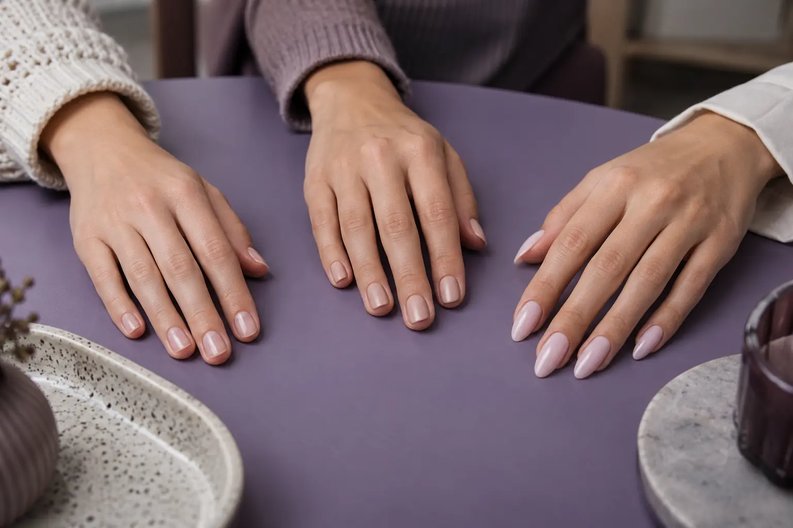

Gelinis lakavimas, nagų stiprinimas ir priauginimas: trys skirtingi rezultatai
Autorius: Madbeauty redakcija · Numatyta 2026 m. gruodžio 22 d. 16:00 (Lietuvos laiku)
Atskirkite spalvos dangą, natūralaus nago padengimą ir papildomo ilgio kūrimą. Palyginkite konkrečių meniu darbų apimtį, laiką ir kainą.

Gelinis lakavimas skirtas spalvai ar paviršiaus dangai, „stiprinimu“ gali būti vadinamas natūralaus nago padengimas, o priauginimu kuriamas papildomas ilgis. Tačiau „stiprinimas“ nėra vienareikšmis darbų pavadinimas: konkretus produktas gali būti naudojamas ir esamam nagui padengti, ir trumpam ilgio tęsinui sukurti. Rinkitės pagal norimą rezultatą ir tai, ką tiksliai aprašo meniu.
Trys pasirinkimai pagal norimą rezultatą
- Norite spalvos ar dekoratyvaus paviršiaus, o dabartinis ilgis tinka? Lyginkite gelinio lakavimo pasiūlymus. Pats gelinis lakavimas papildomo nago ilgio nesukuria, kaip paaiškina Amerikos dermatologų akademija.
- Norite padengti natūralų nagą nepridėdami papildomo ilgio? Ieškokite aprašymo, kuriame nurodytas natūralaus nago padengimas ir aišku, ar ilgis keičiamas. Tik „stiprinimas“ etiketėje neatskleidžia nei medžiagos, nei konkrečių darbų.
- Norite ilgesnės formos? Lyginkite priauginimo pasiūlymus pagal nurodytą ilgį, ar į kainą įtrauktas koregavimas ir ar dizainas yra papildomas darbas.
Kodėl „stiprinimas“ gali reikšti skirtingą apimtį?
Tai priklauso nuo paslaugos užduoties, ne vien nuo produkto pavadinimo. Pavyzdžiui, CND PLEXIGEL Shaper apraše gelis nurodomas kaip natūralaus nago padengimas. Tas pats produktas gali būti naudojamas ir trumpam laisvojo krašto tęsinio ilgiui kurti ant formos. Tai parodo, kodėl verta atskirti tris norus: spalvos dangą, esamo ilgio padengimą ir papildomą ilgį. Šis kosmetinio naudojimo pavyzdys nėra biologinio nago gydymo ar jo atkūrimo garantija, taip pat neapibrėžia visų meniu, kuriuose vartojamas žodis „stiprinimas“.
Kaip apimtis atsispindi konkrečių meniu kainose ir laike?
2026 m. spalio 9 d. peržiūrėtame Vili Nails meniu aparatinis manikiūras su geliniu lakavimu be nuėmimo kainavo 43 Eur ir truko 70 min. vienspalviam, prancūziškam ar ombre variantui; „maxi“ dailė kainavo 46 Eur ir truko 80 min. Su nuėmimu atitinkami variantai buvo 45 Eur ir 80 min. bei 50 Eur ir 90 min. Tai konkretaus meniu variantai, ne bendras tarifas.
Tą pačią dieną „Room for nails“ meniu priauginimą iki 3 cm esamiems klientams nurodė kaip 52 Eur ir 135 min., o su dizainu – 55 Eur ir 150 min. Naujiems klientams nurodyta 60 Eur ir 195 min., su dizainu – 65 Eur ir 210 min. Meniu rodė sumažintas kainas. „Naujam klientui“ čia yra meniu kategorija; tai savaime nereiškia naujo rinkinio ar vienodos paslaugos apimties visuose salonuose.
Trumpa meniu palyginimo patikra
- Įvardykite tikslą: spalva, esamo ilgio padengimas ar papildomas ilgis.
- Patikrinkite, ar aprašyme aiškiai pasakyta, kas dengiama ir ar kuriamas papildomas ilgis.
- Sulyginkite įtrauktus darbus: nuėmimą, priauginimo apimtį, koregavimą ir dizainą.
- Palyginkite konkretaus varianto kainą ir trukmę, atsižvelgdami į meniu nurodytą kliento kategoriją.
Jei meniu nurodo tik „stiprinimą“, bet nepaaiškina, ar tai esamo ilgio padengimas, ar ilgio kūrimas, iš vien pavadinimo palyginamos paslaugos nustatyti negalima. Pateikti Vili Nails ir „Room for nails“ pavyzdžiai rodo skirtingas konkrečių meniu apimtis; jie nepatvirtina paslaugų prieinamumo per Madbeauty ir nėra Lietuvos kainų vidurkis.
Procedūrų aprašai kataloge: Nagų stiprinimas. Miestą ir realaus teikėjo pasiūlymą pasirinkite kataloge, kai tokia pasiūla pateikta.
Susiję gidai
Šaltiniai
- Vili Nails · realių paslaugų variantai · www.treatwell.lt
- Room for nails · paslaugų apimtis · www.treatwell.lt
- AAD · gelinis manikiūras · www.aad.org
- SCCS · HEMA mokslinė nuomonė · health.ec.europa.eu
- CND PLEXIGEL Shaper: natūralaus nago padengimas ir ilgio kūrimas · www.cnd.com